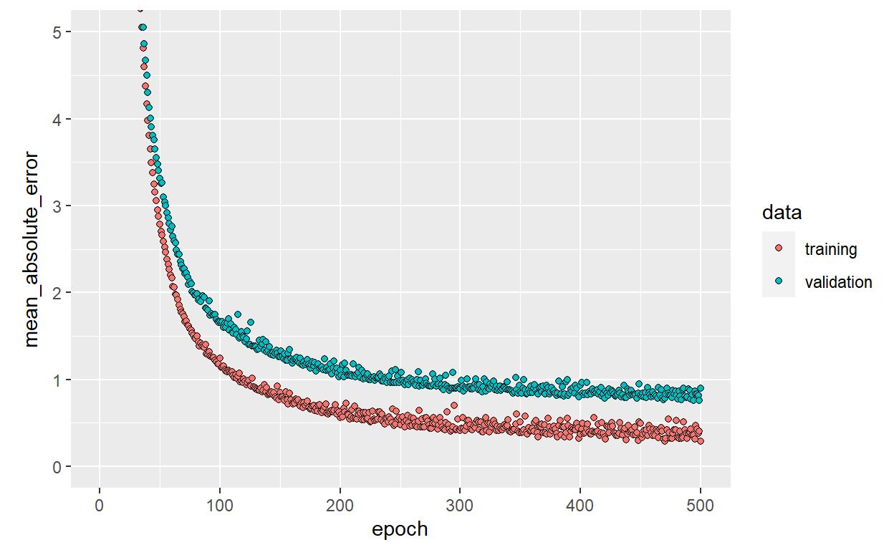
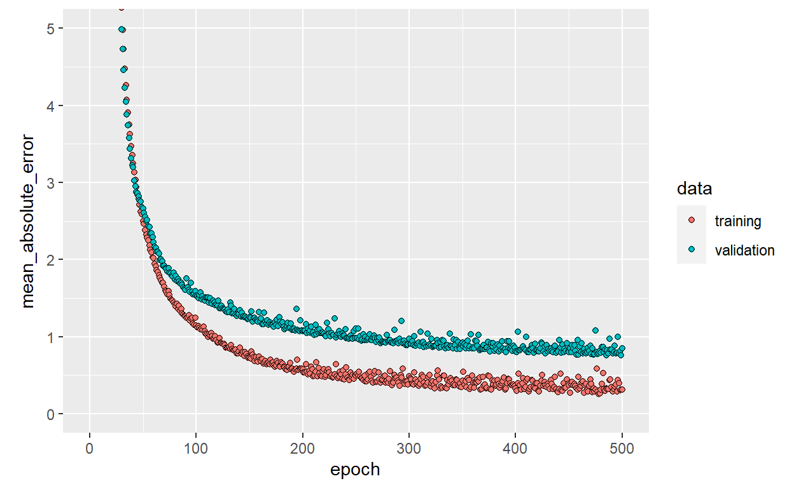

This use case shows how to use mlr3 keras on a simple Regression Task.
This use case shows how to use gh_pkg("mlr3keras") on simple Boston Housing Regression Task. Therefore, the Code from Keras Basic Regression Tutorial is translated to gh_pkg("mlr-org/mlr3keras") respectively gh_pkg("mlr-org/mlr3keras") syntax. Moreover, this use case extends the tutorial mentioned above by
gh_pkg("mlr-org/mlr3keras")As gh_pkg("mlr-org/mlr3keras") is still under heavy development, this place might be a good way to look for currently working aspects of the package.
This tutorial assumes familiarity with the basics of mlr3pipelines. Consult the mlr3book if some aspects are not fully understandable.
library(mlr3)
library(mlr3keras)
library(mlr3pipelines)
library(keras)
library(reticulate)
library(ggplot2)In this use case we build a model that predicts the Median value of owner-occupied homes in Boston in $1000’s (medv).
The Boston Housing Task is accessible directly from mlr3tasks.
boston_task = tsk("boston_housing")This data set is much smaller than the others we’ve worked with so far: it has 506 total examples that are split between 404 training examples and 102 test examples:
paste(
"This data set contains", boston_task$nrow, "observations and",
boston_task$ncol - 1, "features."
)
[1] "This data set contains 506 observations and 18 features."Keras regression learner only supports numeric features. Consequentely we drop all non-numeric features from boston_task.
boston_task$select(subset(boston_task$feature_types, type == "numeric")$id)
boston_task$head(n = 3)
medv age b cmedv crim dis indus lat lon lstat nox
1: 24.0 65.2 396.90 24.0 0.00632 4.0900 2.31 42.2550 -70.955 4.98 0.538
2: 21.6 78.9 396.90 21.6 0.02731 4.9671 7.07 42.2875 -70.950 9.14 0.469
3: 34.7 61.1 392.83 34.7 0.02729 4.9671 7.07 42.2830 -70.936 4.03 0.469
ptratio rm zn
1: 15.3 6.575 18
2: 17.8 6.421 0
3: 17.8 7.185 0Now the dataset contains 13 different numeric features:
crim - per capita crime rate by townzn - proportion of residential land zoned for lots over 25,000 sq.ft.indus - proportion of non-retail business acres per town.nox - nitric oxides concentration (parts per 10 million)rm - average number of rooms per dwellingage - proportion of owner-occupied units built prior to 1940dis - weighted distances to five Boston employment centresptratio - pupil-teacher ratio by townb - 1000(Bk - 0.63)^2 where Bk is the proportion of blacks by townlstat - % lower status of the populationcmedv - a numeric vector of corrected median values of owner-occupied housing in USD 1000lon - a numeric vector of tract point longitudes in decimal degreeslat - a numeric vector of tract point latitudes in decimal degreesNotice that each one of these input data features is stored using a different scale. In this case it’s recommended to normalize features. Although the model might converge without feature normalization, it makes training more difficult, and it makes the resulting model more dependant on the choice of units used in the input. We create a PipeOpScale that is going to be connected to ther learner later on when it comes to training.
po_scale = PipeOpScale$new()For this use case we create a sequential modell, a linear stack of layers. In the input layer the shape of our input data is defined. Input is analized by two densely connected hidden layers. A final denselayer returns a single continous estimation value for the observations target.
As creation of models is very convenient and intuitive in keras, gh_pkg("mlr-org/mlr3keras") relies on this syntax for model creation. Wrapping our model in a function build_modell has several advantages:
build_model. Note, that seed setting is not trivial in this case. If you are intrested in more details, see chapter ??Reproducability.
build_model = function(seed = TRUE) {
checkmate::assert_logical(seed, len = 1, all.missing = FALSE)
if (seed) reset_random_seeds()
model = keras_model_sequential() %>%
layer_dense(units = 64, activation = "relu",
input_shape = boston_task$ncol - 1) %>%
layer_dense(units = 64, activation = "relu") %>%
layer_dense(units = 1)
model %>% compile(
loss = "mse",
optimizer = optimizer_rmsprop(),
metrics = list("mean_absolute_error")
)
model
}
model = build_model()
model %>% summary()
Model: "sequential"
________________________________________________________________________________
Layer (type) Output Shape Param #
================================================================================
dense (Dense) (None, 64) 896
________________________________________________________________________________
dense_1 (Dense) (None, 64) 4160
________________________________________________________________________________
dense_2 (Dense) (None, 1) 65
================================================================================
Total params: 5,121
Trainable params: 5,121
Non-trainable params: 0
________________________________________________________________________________Heading back to mlr_pkg("mlr3") syntax we set up the keras regression learner like any other and define hyperparameters. Note that the compiled model defined in the previous chapter is such a hyperparameter. That makes regr.keras learner easily tunable over different models. For more information about tuning see mlr3 manual.
learner = po("learner", lrn("regr.keras"))
learner$param_set$values$epochs = 500L
learner$param_set$values$model = model
learner$param_set$values$validation_split = 0.2Another hypereparameter is callback. A callback is a set of functions, bundeled in a list that can be used to explore specified progress stages during training. Accordingly a defined callback function is called at its’ specified stage of training to monitor or display specified model parameters at this stage. The history callback for example is applied to each training progress of a modell by default. It stores the training history in a history slot of its’ concerning modell object. For a list of all implemented callbacks see Keras Callbacks.
In our first learner we want to reduce information about training progress to a single dot printed out at the end of each applied epoch. Therefore we create a LambdaCallback that apllied at each eochs end.
print_dot_callback <- callback_lambda(
on_epoch_end = function(epoch, logs) {
if (epoch %% 80 == 0) cat("\n")
cat(".")
}
)
learner$param_set$values$callbacks = list(print_dot_callback)Callback can also be called through mlr3keras syntax. As not all callbacks are implemented yet mlr3keras callbacks is still in progress. Currently working callbacks are:
cb_es: Early stopping callbackcb_lrs: Learning rate scheduler callbackcb_tb: Tensorboard callbackcb_lr_log: Learning rate logger callbackLogMetrics: Batch-wise Metrics Logger CallbackSetLogLR: Batch-wise Metrics Setter CallbackInitialize and early stopping for instance like this:
early_stop <- callback_early_stopping(monitor = "val_loss", patience = 20) # keras syntax
# early_stop <- cb_es(monitor = "val_loss", patience = 20) # mlr3 syntaxWe initialize our learner. Note, that we clone the R6 object keras_500 learner to a second object keras_es that we will use later on.
keras500 = GraphLearner$new(po_scale %>>% learner)
keras_es = keras500$clone(deep = TRUE)Before we train the learner we devide observations randomly into train and test set. The training set contains 404 observations and the test set 102. Now we can train our learner, using the training_id. Reminder: We set in callback, each epoch is represented by a dot.
train_id <- sample(boston_task$row_ids, 404L)
test_id <- setdiff(boston_task$row_ids, train_id)
keras500$train(boston_task, row_ids = train_id)
................................................................................
................................................................................
................................................................................
................................................................................
................................................................................
................................................................................
....................We plot the saved history from each epoch. The plot shows the MAE on training and validation set for each epoch.
history = keras500$model$regr.keras$model$history
plot(history, metrics = "mean_absolute_error", smooth = FALSE) +
coord_cartesian(ylim = c(0, 5))
The validation curve noticably flattens after about 200 epochs. So epochs = 500L seems to be set to high. In this case we can iplement our Early stopping callback. early_stop will stop the modell if it shows no improvment in val_loss within 20 epochs. Accordingly it should stop after about 200 epochs.
keras_es$param_set$values$regr.keras.callbacks = list(early_stop, print_dot_callback)
keras_es$param_set$values$regr.keras.model = build_model()
keras_es$train(boston_task, row_ids = train_id)
................................................................................
................................................................................
................................................................................
................................................................................
................................................................................
................................................................................
....................
history = keras_es$model$regr.keras$model$history
plot(history, metrics = "mean_absolute_error", smooth = FALSE) +
coord_cartesian(xlim = c(0, 500), ylim = c(0, 5))
And the graph stopps after arounf 200 epochs.
In the last step we predict on the test set using keras_es. Prediction is as easy as with any other learner.
predict_boston = keras_es$predict(boston_task, row_ids = test_id)
head(predict_boston$data$tab, n = 3)
row_id truth response
1: 6 28.7 28.6226
2: 7 22.9 21.8337
3: 9 16.5 16.8804
predict_boston$score(msr("regr.mae"))
regr.mae
0.7294462
[1] "The models average error is at about 729.45$"As Keras R Studio is a system running code on multiple platforms, obtaining reproducibal results is not trivial. This chapter provides ways to easily obtain reproducible results anyways.
This chapter will teach you a way to obtain reproducible results using keras. More precisely we will stick to \(tensorflow version \ge 2.0\). You can check the current version like this:
tensorflow::tf_version()If you use \(tensorflow version < 2.0\) you have two options.
use_session_with_seed()
RKerasFAQ shows a nice way how to set seeds by the function use_session_with_seed(). In this case you can just replace reset_random_seeds in the build_model function by applying use_session_with_seed().
Use reset_random_seeds (see below)
As you might have noticed we have already been using reset_random_seeds in this chapter to obtain reproducible results. We introduced this function because in some incidinces you might run into an error calling use_session_with_seed() with \(tensorflow version < 2.0\).
tensorflow::use_session_with_seed(1L)
Error in py_get_attr_impl(x, name, silent): AttributeError: module 'tensorflow' has no attribute 'reset_default_graph'reset_random_seeds establishes a common random seed for R, Python, NumPy, and TensorFlow and disables hash randomization. Note, that you should not have been running TensorFlow before running the function. If you did you might have to restart the session before proceeding.
print(reset_random_seeds)
function(seed = 1L) {
checkmate::assert_integerish(seed, len = 1L, lower = 1L, all.missing = FALSE)
if(!is.integer(seed)) seed <- as.integer(seed)
# set seed in...
set.seed(seed) # R
random <- import("random")
random$seed(seed) # Random
numpy <- import("numpy")
numpy$random$seed(seed) # NumPy
# disable hash randomization before importing tensorflow
os <- import("os")
os$environ$setdefault("PYTHONHASHSEED", value = "str(1)")
# set tensorflow seed
tensorflow <- import("tensorflow")
tensorflow$random$set_seed(seed)
}
<bytecode: 0x000000005d7a2690>For more information see Stackoverflow Reset Seeds.
GPU computations and CPU parallelization can be another source of
non-reproducibility, since both can result in non-deterministic execution patterns. The only way to provide results from this error is to disable GPU and CPU paralelism. This can mean a hard Tade-of between time and reproducability. use_session_with_seed() diables both GPU and CPU by default. For more detailed description read code on Github.
sdak bna
For attribution, please cite this work as
Pfisterer & Funk (2020, May 5). mlr3gallery: Boston Housing Regression Task on mlr3keras. Retrieved from https://mlr3gallery.mlr-org.com/posts/2020-05-05-boston-housing-regression-task-on-mlr3keras/
BibTeX citation
@misc{mlr3-keras-basics,
author = {Pfisterer, Florian and Funk, Henri},
title = {mlr3gallery: Boston Housing Regression Task on mlr3keras},
url = {https://mlr3gallery.mlr-org.com/posts/2020-05-05-boston-housing-regression-task-on-mlr3keras/},
year = {2020}
}